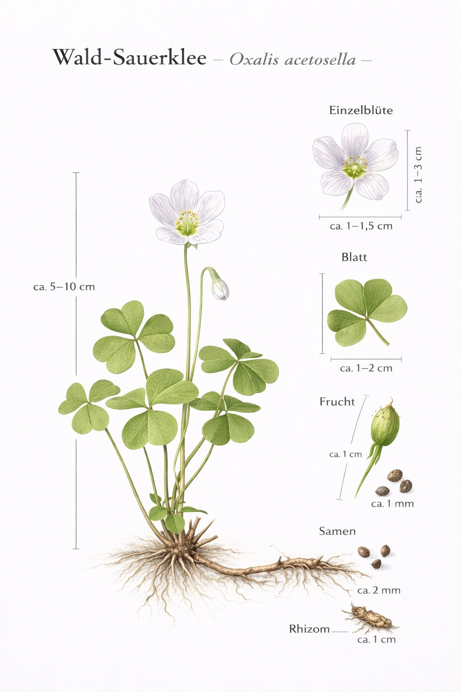

Nr. 9 · Frühblüher im Wald
Wald-Sauerklee
Oxalis acetosella
Der saure Dreifuss des Waldes – mit einer verborgenen Geheimblüte.

Die Geheimblüte – Kleistogamie
Im Sommer bildet der Wald-Sauerklee winzige, sich nie öffnende Geheimblüten direkt am Boden. Diese bestäuben sich selbst und produzieren zuverlässig Samen – ohne Licht, ohne Bestäuber, ohne Zufall. ‚Kleistogamie' heisst das (griechisch: ‚geschlossene Ehe'). Ein geniales Notfallsystem für den tiefen Schatten.
Schlafbewegungen – die Pflanze macht Pause
Bei Regen, starker Sonne und nachts falten sich die Blättchen zusammen. Der Mechanismus schützt vor Überhitzung: Tautropfen können bei Sonnenschein wie Lupen wirken und das Blattgewebe verbrennen. Die Bewegung ist mit blossem Auge sichtbar – ein Beobachtungsexperiment, das alle Altersgruppen fasziniert.
Wissenswertes & Merksätze
Kostprobe
Ein Blatt in den Mund – der Säuregeschmack ist gut spürbar. Kleine Mengen harmlos. Historisch als Salatgewürz und Säuerungsmittel genutzt.
Kleistogamie
Die Geheimblüten öffnen sich nie. Erst wer im Sommer am Boden sucht, findet sie – ein Argument, auch nach der Blütezeit aufmerksam zu bleiben.
Zeigerpflanze
Grosse Teppiche zeigen saure, nährstoffarme Waldböden an – typischerweise unter Fichten oder alten Buchen. Billiger Bodentest ohne Labor.